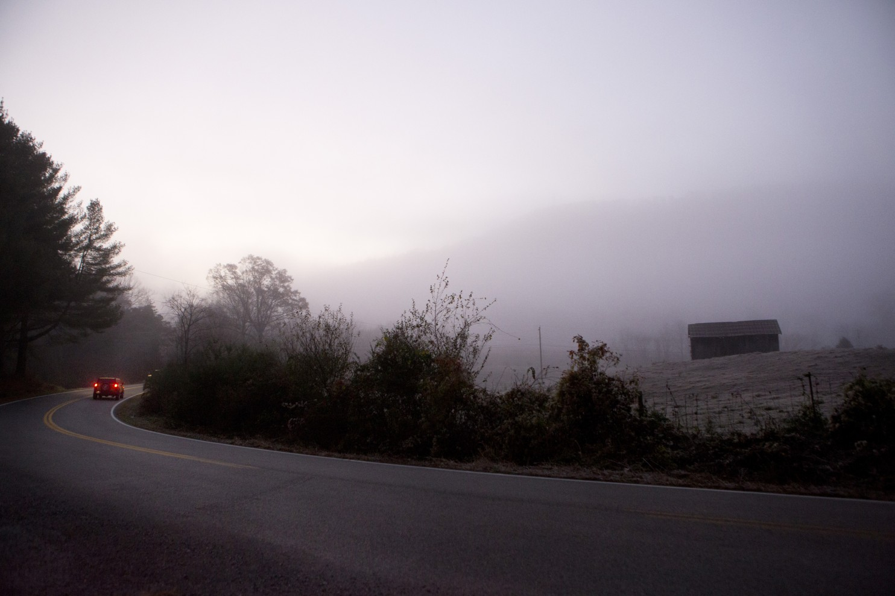
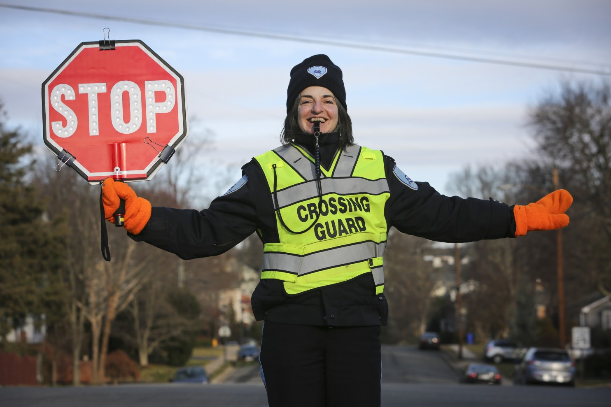

Andee Erickson
Home
About
Written
Multimedia
Contact
Legislators remove choice to ‘opt out’ of student segregated fees from state budget
Gov. Scott Walker’s state budget for 2017-19 proposed allowing students in the UW System to opt out of paying fees that support student organizations and activities, but last Thursday state legislators removed that proposal from the budget.
Δ
Climate change has big implications for farmers. Will Sonny Perdue get that?
President Trump has nominated Sonny Perdue, the former governor of Georgia, to be his secretary of agriculture. It’s a wide-ranging position at the head of a vast department, but one immediate question is where Perdue will stand ...
Δ

A boy was sexually abused in a janitor’s closet. Is the school responsible?
Bobby Gobble was a janitor at Lebanon Elementary School when he began luring a boy to the custodian’s office and sexually abused him behind closed doors. Gobble later was able to convince the third grader’s family ...
Δ
Betsy DeVos is secretary of education. What do those vested in public ed have to say?
When an English education student found out Betsy DeVos had just been confirmed as the new secretary of education she was sitting in a class for her major and they took a moment to acknowledge the news.
Δ
Mourning a brother, family asks for help solving D.C.’s first homicide of the year
Kent Lewis was going about his day a while ago when he came up the escalator at the Rosslyn Metro station. He was shocked when he saw the person panhandling at the exit to the station: his brother, Richard.
Δ

Lighting the way: A new tool to make Arlington school crosswalks safer
Before the school day can begin for many kindergarten through fifth-grade students at Nottingham Elementary School, they must cross a busy intersection on their way from surrounding neighborhoods during morning rush hour.
Δ